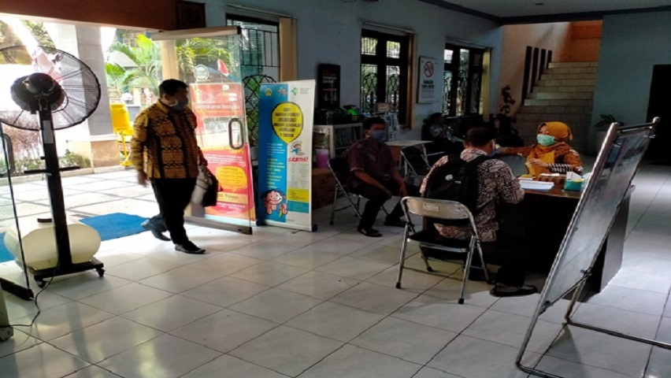
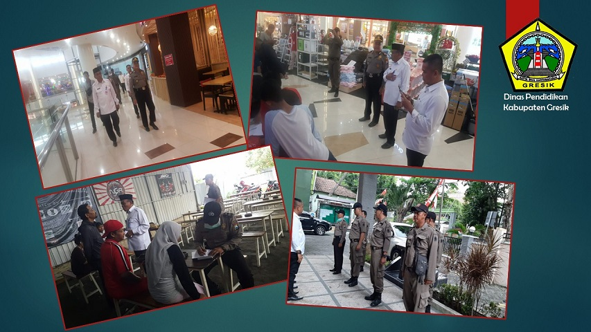

BERITA TERPOPULER



Sabtu, 02 Mei 2020, 16:10:14 WIB
SELAMAT HARI PENDIDIKAN NASIONAL TAHUN 2020
Ing Ngarso Sung Tuladha Ing Madya Mangun Karsa Tut Wuri Handayani -Ki Hadjar Dewantara “Belajar memang tidak selalu mudah, tetapi inilah saatnya kita berinovasi.
Continue Reading...PAPAN INFORMASI
KOTAK e PAPAN INFORMASI
AGENDA
TOP POST
...
...
...
STATISTIK
ISI KOTAK STATISTIK
BANNER
BANER1
KOTAK BANNER 2